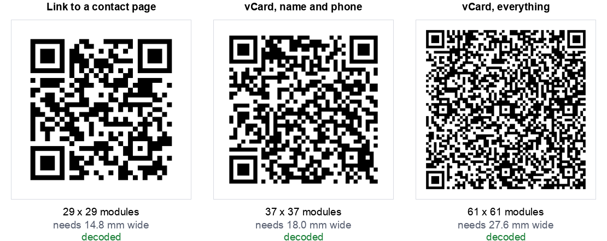

A business card is 85 by 55 mm. After margins, a logo and four lines of contact details, the space left for a QR code is usually a square somewhere between 12 and 18 mm.
That constraint decides everything, and almost nobody checks it before designing the card. So we measured what each option costs.
The short version: a complete vCard needed 27.6 mm to print reliably, which is half the height of the card. A link to a contact page needed 14.8 mm and fits comfortably.
The space you actually have
Printed QR codes have a floor. Below roughly 0.4 mm per module, ink spread and camera focus start working against you, and our scan limits test found that focus is what actually breaks a scan, not size. Every code also needs a quiet zone of four blank modules on each side, which is part of the specification rather than decoration.
So the minimum printed width of any code is (modules + 8) x 0.4 mm. That single line of arithmetic is what the rest of this article is about.

What each vCard field costs you
We built a vCard one field at a time and measured the printed width after each addition:
| The card contains | Chars | Grid | Min printed width | Fits a 15 mm slot? |
|---|---|---|---|---|
| Name | 48 | 33 x 33 | 16.4 mm | No |
| + mobile | 75 | 37 x 37 | 18.0 mm | No |
| 103 | 41 x 41 | 19.6 mm | No | |
| + company | 121 | 45 x 45 | 21.2 mm | No |
| + job title | 145 | 49 x 49 | 22.8 mm | No |
| + website | 174 | 53 x 53 | 24.4 mm | No |
| + office phone | 201 | 57 x 57 | 26.0 mm | No |
| + postal address | 243 | 61 x 61 | 27.6 mm | No |
Look at the first row. A vCard containing only a name already needs 16.4 mm, because the format itself costs about 25 characters in wrappers before you add anything. There is no such thing as a small vCard code.
From there each field costs roughly one and a half to two millimetres of printed width. The postal address is the most expensive single field in the list, and it is also the one nobody scans a business card to get.
The uncomfortable finding: the vCard QR code, the thing designed for business cards and printed on millions of them, is the worst format to put on a business card. It needs nearly twice the width of a link, for information the card already prints in readable text.
The alternatives, measured
| Approach | Chars | Grid | Min printed width |
|---|---|---|---|
| Phone number only | 16 | 25 x 25 | 13.2 mm |
| Link to your site | 24 | 25 x 25 | 13.2 mm |
| Link to a contact page | 29 | 29 x 29 | 14.8 mm |
| Email address only | 28 | 29 x 29 | 14.8 mm |
| vCard, name and mobile | 75 | 37 x 37 | 18.0 mm |
| vCard, everything | 243 | 61 x 61 | 27.6 mm |
A link to a page on your own site is the smallest useful option, and it has a second advantage the vCard cannot match: you can change what is on that page. A printed vCard is frozen. Change your number and every card in every wallet is now wrong. Change a page, and every card ever printed is correct again.
We found the same thing when we tested social profile codes: a short link on a domain you own beats the format that seems purpose built for the job.
The error correction trap
The instinct when a printed code has to be small is to raise the error correction level so it survives wear. That makes things worse, and by more than people expect:
| Error correction on the full vCard | Grid | Min printed width |
|---|---|---|
| L, lowest | 57 x 57 | 26.0 mm |
| M, the common default | 61 x 61 | 27.6 mm |
| Q | 73 x 73 | 32.4 mm |
| H, highest | 81 x 81 | 35.6 mm |
Going from M to H on a full vCard adds 8 mm of required width. At a fixed printed size it does the opposite of what you wanted: the modules get smaller, so the code becomes harder to read in exactly the poor light where you were hoping the extra protection would help. Our damage test covers where the extra correction does and does not earn its place.
Keep business card codes at M unless you are adding a logo, and if you are adding a logo, use a link rather than a vCard so you have room for both.
Which one to use
- You have a website. Link to a contact page on it. Smallest code, changeable, and the page can offer a downloadable contact file so people still get one tap saving. Use our URL generator.
- You do not have a website. Use a vCard with name, mobile and email only, and design the card around an 18 mm square. Our vCard generator lets you leave the rest out.
- The card is for one purpose, such as a tradesperson who wants calls. A phone code at 13.2 mm is the smallest and most direct thing on this list. Our phone generator makes one.
- Never put a full vCard with a postal address on a business card. It does not fit, and the address is printed on the card anyway.
Getting it onto the card
- Give it a real corner, not a leftover gap. A code squeezed to 10 mm because the layout ran out of room is a code that fails at the networking event.
- Keep the quiet zone. Designers routinely crop the white border to make a code fit. That border is how the scanner finds the code. Cropping it is the single most common way a printed code stops working.
- Print it black on white. Not on your brand colour, not reversed out. Our designer will warn you when contrast drops too far, but on something this small, plain is the right answer.
- Say what it does. "Save my details" or "See my work" next to the code gets far more scans than a bare square.
- Test the actual printed card, not the PDF on screen. Ask your printer for one sample first. You can also run the file through our stress test, which will tell you how much blur the code tolerates before it stops decoding.
How we tested this
- One fictional person throughout, so the only variable was how many fields went into the code.
- Error correction level M except in the section that varies it deliberately.
- Grid sizes read from the encoder, not measured off an image, so they are exact.
- Every code decoded back and compared character by character with the input. All of them matched, including the 61 by 61 full vCard.
- Printed widths calculated at 0.4 mm per module plus the four module quiet zone on each side.
Two honest limits. The 0.4 mm floor is a widely used working figure for laser printing rather than something we measured on a press, and your printer and stock will move it. And every code here decodes fine on a screen at full size, so this is a question of printed reliability rather than whether the code is valid.
The summary
Business card QR codes fail for a boring reason. The format everyone reaches for is roughly twice the size the card can hold, so it gets shrunk to fit, and then it does not scan in a dim bar at the end of a conference day.
Point it at a page, not at a contact card. A link needed 14.8 mm against 27.6 mm for a full vCard, fits the space a real card leaves, and can be updated after the cards are printed.
If you would rather have the contact card anyway, keep it to name, mobile and email, design in an 18 mm square, and build it with our vCard generator. Either way, check the finished artwork with the stress test before the print run.